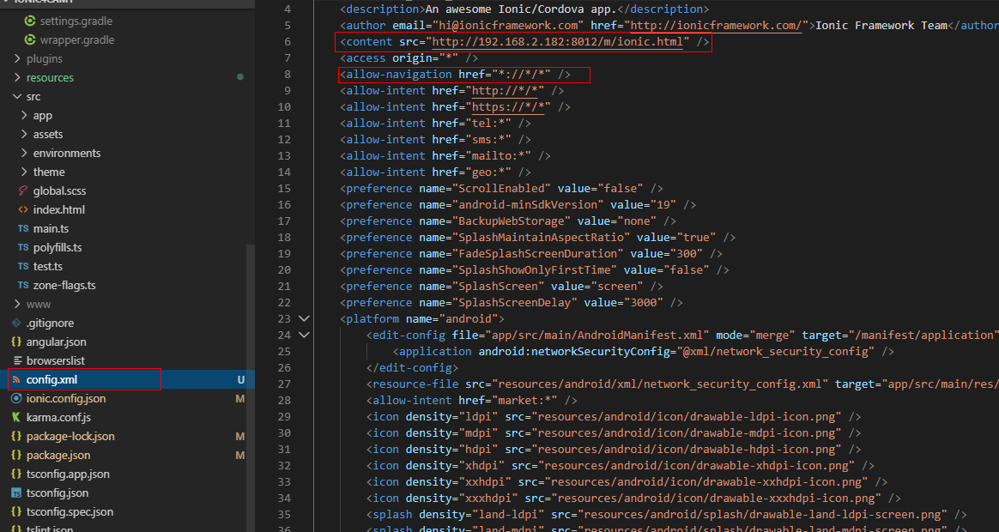
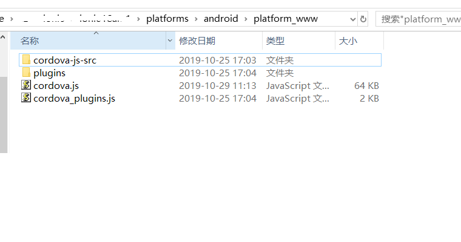

以前介绍过我们系统需要扫描识别二维码
但是使用手机浏览器调用摄像头扫码的体验实在太差了，需要先拍照，还要拍的很清晰，稍微抖了一下就识别不了，这个坑挖下了，自然的填上。今天就是填坑来了，主要是使用ionic把网页打包成app，通过js使用ionic的插件来调用摄像头扫码。 开始吧。
开发网页
开发手机版网页，没有手机版的可以用web版代替，没有web版现在开始开发。
配置ionic
安装nodejs
到官网下载nodejs并安装
安装ionic
npm install -g ionic
创建ionic项目
ionic start myApp
添加Android平台生成环境
安装Android studio (避免手动去下载jdk配置java、android环境，没办法习惯了vs的一键安装)
生成android安装包
ionic cordova build android
修改首页指向自己的网页
参照下图修改config.xml文件

再次生成android安装包
ionic cordova build android
安装生成的app
在目录platforms\android\app\build\outputs\apk\debug中找到生成的app复制到你的手机安装，打开之后应该就能看到你的页面了。
二维码扫码
安装二维码插件
我最终选择使用的barcode-scanner插件 barcode-scanner 这个插件在浏览器上使用有摄像头关闭后页面被挡住的bug，有能力修改源码的大神可以试试，这个插件在网上介绍比较多 qr-scanner 还有一个插件网上介绍也比较多zbar,但是我安装后无法编译通过，经过几经挣扎最终选择了barcode-scanner。有其他更好的插件一定要发给我125880321@qq.com。 安装比较简单，参照官方文档使用如下命令
ionic cordova plugin add phonegap-plugin-barcodescanner
npm install @ionic-native/barcode-scanner
生成js包和app.apk安装包
安装好插件什么也不需要做直接用上面介绍过的打包命令再次打包
- 到手机安装app
- 复制platforms\android\platform_www目录下的所有文件到你的web项目，并项目需要使用的地方添加cordova.js引用，只需引用这个文件就可以了 
1
<script src="cordova.js"></script>
网页中调用二维码扫描
复制以下代码到需要触发扫码的地方，如click事件中
1
2
3
4
5
6
7
8
9
10
11
12
13
14
15
16
17
18
19
20
21
22
23
24
25
26
27
28
29
30
31
32
33
cordova.plugins.barcodeScanner.scan(
function (result) {
/* alert("We got a barcode\n" +
"Result: " + result.text + "\n" +
"Format: " + result.format + "\n" +
"Cancelled: " + result.cancelled); */
if (result.text != null && result.text.length > 0) {
alert(result.text)
} else {
//这里要加阻止网页回退，否则没有扫码，点击Android返回按钮时会在关闭相机的同时还会回退到上一页
window.history.pushState('forward', null, '#');
window.history.forward(1);
//alert("空的")
//return;
}
},
function (error) {
alert("Scanning failed: " + error);
},
{
preferFrontCamera : true, //前置摄像头 iOS and Android
showFlipCameraButton : true, // iOS and Android
showTorchButton : true, // iOS and Android
torchOn: true, //开启闪光灯 Android, launch with the torch switched on (if available)
saveHistory: true, // Android, save scan history (default false)
prompt : "Place a barcode inside the scan area", // Android
resultDisplayDuration: 500, // Android, display scanned text for X ms. 0 suppresses it entirely, default 1500
formats : "QR_CODE,PDF_417", // default: all but PDF_417 and RSS_EXPANDED
orientation : "landscape", //屏幕方向随系统 Android only (portrait|landscape), default unset so it rotates with the device
disableAnimations : true, // iOS
disableSuccessBeep: false // iOS and Android
}
);
部分问题说明
- 在点击Android返回键返回时关闭相机又回退了一页，如果调用扫描你复制的官方代码，请参照我给的代码修改
- 在pc浏览器打开网页会出现几个弹出，要是直接点确定，会造成浏览器卡死，如果点取消或者把弹出框内容删除点确定则没事。这个是插件的bug(有人提了issue，ionic团队把锅丢给了插件)，使用了旧版接口，网上有很多答案，但是都无效。你不能奢望用户来点取消，我的解决方案是在浏览器打开页面时不加载cordova.js，具体做法是在app打开页面时会传递一个特殊的参数，页面获取到参数后存入cookie，使用的地方从cookie中读取这个参数，有这个参数表示是app打开页面，动态加载cordova.js，否正不加载仍然用以前的方式扫码。
发布app
修改图标
打包release版app
见官方文档
参考资料
- ionic文档
- 扫码插件barcodescanner
- 报错processmessage failed: invalid message
- 报错processmessage failed: invalid message解决方法
本文会经常更新，请阅读原文： https://dashenxian.github.io/post/%E4%BD%BF%E7%94%A8Ionic%E6%89%93%E5%8C%85%E7%BD%91%E9%A1%B5%E6%88%90App%E5%B9%B6%E8%AF%86%E5%88%AB%E4%BA%8C%E7%BB%B4%E7%A0%81 ，以避免陈旧错误知识的误导，同时有更好的阅读体验。

本作品采用 知识共享署名-非商业性使用-相同方式共享 4.0 国际许可协议 进行许可。欢迎转载、使用、重新发布，但务必保留文章署名 吕毅 （包含链接： https://dashenxian.github.io ），不得用于商业目的，基于本文修改后的作品务必以相同的许可发布。如有任何疑问，请 与我联系 (walter.lv@qq.com) 。